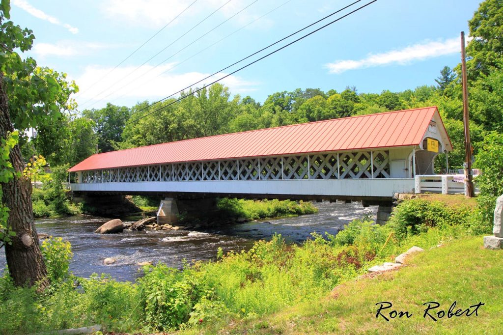
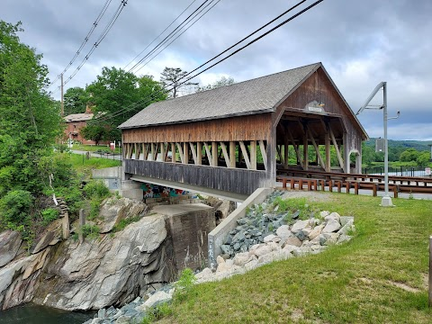
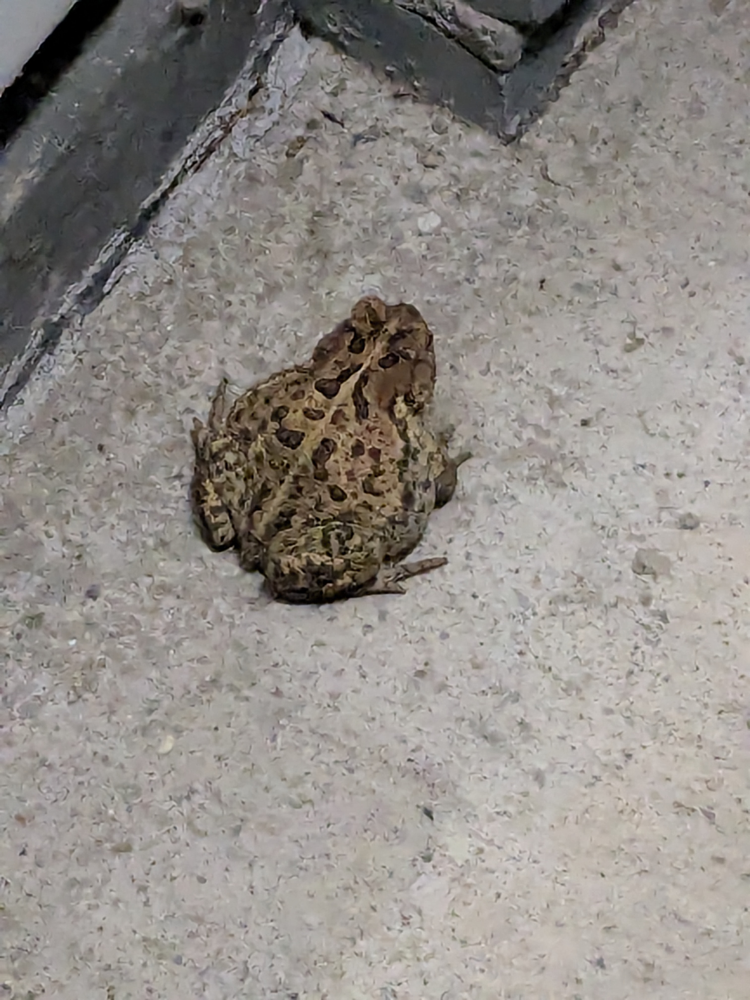

Bostreal Day 1
I slightly regret not having taken photos every day to show the amazing places I was able to ride through so I hope to make my readers see with the mind’s eye. This happened because on my way to Montréal I kept my phone in a plastic bag to protect it from rain. There will be photos with a ride summary at the top of each page, and I did take lots of pictures on my ride home.
Nothing about waking up quietly at 5am and eating jam and pumpkin seed toast really prepares you for leaving home by bike, it’s just one of those rituals that puts your heart in the right place before you take off. I also loaded my backpack with a kilogram of sugars and a box of energy chews that, unbelievably, would sustain me the rest of the day like a hummingbird. So I walked my bike down the stairs, put on my backpack and reflective vest, and started to push the pedals.
Cambridge was gray, quiet and empty in the morning so I got on the Minuteman trail and took it to Bedford. My first 45 km of warmup let me adjust to the weight on my back as I was making an effort to keep a good posture. I went through Carlisle and then in Groton I reached a symbolic marker of 300 km to go as well as the last familiar road.
Two hours in, before I got on 119 west, I made my first gas station stop and I only refilled my bottles. I had been keeping a steady cadence of eating a pack of chews every half hour so there was no need for real food. So I kept on riding and luckily the shoulder on the highway was very wide and quiet with little traffic through the forest. I was making good time and had some negotiations with the wind about which direction to go that ended up with a friendly truce.
I reached my first climb in Willard Brook state forest and it went nice and steady up some winding creek beds. The only close call I had with a vehicle my whole trip happened shortly afterwards when a truck passed me after a narrow junction in the woods, and luckily I avoided danger by riding up a driveway. I could feel that I had left the thickly settled towns of Massachusetts beyond Fitchburg and for the first time entered New Hampshire by bike, welcomed by a highway sign. I started to feel the spirit of adventure as I passed through the remote town of Winchester, NH that felt like the wild west because all the wooden buildings were on one road whose pavement had crumbled into dirt.
Around noon, the clouds gave way to the sun just in time for me to admire the Ashuelot covered bridge which was so charming. I just saw it from the road without stopping, but I found an online photo that shows it well.

For those who don’t know, covered bridges in Vermont and New Hampshire are historical landmarks that people go on road trips to see, so I was feeling pretty lucky to happen across a remarkably beautiful one. In fact, I was feeling so good that I went half a km off route in Hinsdale, through a farmer’s market, and past the nation’s oldest continuously operating post office until I noticed I was going the wrong way. This riding high was dangerously strong at such an early point during the ride, with still 200 km to go, but I didn’t care. Seriously, I was road trippin'.
Reality set in as the heat really turned on during a north-bound climb up to Chesterfield. Unfortunately, my water was empty and there was no gas station in Chesterfield so I decided to ride on calmly to the next town, past a very tempting lake lined with bathers, boats, and vacation homes, to fill my bottles. Thankfully a cafe in Westmoreland filled them up with water and I purchased a cookie with gratitude and as a stand-in for a real lunch. After this dehydration near miss, the riding high began to shift to a lull so for good measure, I refilled bottles again at a smoke shop in North Walpole less than an hour later. Because of the heat, I also opted to add less sugar to my water bottles, which sucked because I was less energetic than before. It’s possible that more sugar would have helped, but to be completely honest I was convinced that sustaining a positive attitude would take me further than any food would.
So that was when I crossed the Connecticut river into Vermont, apparently winding back time to crumbling infrastructure from the late 60’s. The towns here weren’t nearly as nostalgic as others I’d seen in New Jersey, and showed few signs of activity other than a few diners and creemee stands. Now that I was following the river northbound, I made my next navigation miscalculation by nearly riding onto a freeway. As I entered the onramp I caught my mistake and retraced 100 yards back to my route. As I did, rain drops start falling and I needed to stop to put on my rain jacket and backpack cover, which was unfortunate because the muggy air was even more hot and humid with the jacket.
Two hours further up the Connecticut, I reached Ascutney, once again feeling thirsty. The carbs powder hadn’t been mixing very well into my water bottles so there was just a big clump of sugar at the bottom of my bottle that made me think I was possibly underfueled. I didn’t see a gas station at the next junction, but I did see an older guy on an e-bike so I stopped to ask him where I could find water. It was nice to talk to someone for the first time in the day and we exchanged details about our routes. He told me that where he’d come from the rain had stopped, so I took my jacket off, and where I could find a gas station for water. I went there and I refilled my bottles with sugar, once again making passersby wonder if the white powders I was consuming were actually drugs.
I kept riding and finally started to notice that my backpack felt lighter because I had eaten all of my energy chews and was starting to go through the carbs mix. I needed any motivation I could get because the finish line was still quite far, over 100 km, already putting my ETA an hour past sunset, so I knew I had to make as few stops as possible. That meant I rode through Windsor, the birthplace of Vermont, without stopping for food. Eventually, I made my way to the Quechee covered bridge, pictured below, and entered some farmland. With the sun shining and the crops rustling I enjoyed the bucolic scenery and let my mind wander along the quiet roads. It seemed like a place where people had humble beginnings and I wondered “Are all dreams born in a corn field?”

My next water stop was in Sharon, NH. As I rode into town I overheard a music festival with a food truck in the common and I stopped a market ‘cross the street. Someone having a snack in the lot asked me about my bike and we got to talking. He was a friendly gravel biker who had been running the sound operation for the festival all day and he seemed really excited about the trip was doing. With the way he was rambling, I started to think I wouldn’t be able to refill my water unless I broke the conversation. The market had water but I was not feeling like eating real food so I opted to keep on drinking carbs and as I went out again to fill my bottles, the man was still there and encouraged me, saying that I’d be so thrilled to look back on this trip in my 70’s and say I’d biked to Montréal. I told him that I knew 60-year-olds who could do this trip faster than me and we laughed. By the time I filled my bottles another man going into the market asked where I was cycling and I told him I’d be riding two gaps to Middlebury that night on my trip to Montréal. He also told me that serious cyclists climb “half a dozen gaps” in the area and when I told him I signed up to ride them the following weekend he looked back at me with cautious disbelief. I knew I was saying something insane too.
The ride kept going and I got to Bethel around 8pm, as the last sunshine was leaving the valley. I decided to fill up on water again because stores would close soon and I had two gaps ahead of me that I wanted to finish in the next two hours. For courage, I treated myself to a coke and savored the end of the golden hour. If my whole trip went well, I would come back to Bethel to start the 6 gaps brevet in a week. I made my way to Rochester gap, a climb with a gentle beginning that would slowly rise into a mile of steep walls punctuated by false flats. I had left some energy in reserve for this challenge and went up steadily without overexerting. At the top I reached the 300 km mark of my ride and knew that I would be riding into the night as I turned on my headlights and sped down the steep, bumpy tarmac to Rochester.
Rochester seemed like a quaint town and while I rode through all I could see were wooden storefronts and a few people dining. The whole world seemed purple-gray in the drowsy twilight and I all I could think was how nice it must be to spend all day in the forests or fields, motionless, and watch the day turn to night. I kept riding to Hancock and turned to go up Middlebury gap in the dark. This gap started with a shallow grade that increased monotonoically to a long steep wall at the top. The feeling in the legs was good as I chugged up the grade in the dark with my headlight illuminating a narrow beam ahead. The light let me read painted road markers that read “GMSR KOM 5km”, marking down the miles to get to the top for the racers that would be sending themselves up these slopes in less than two months time. They motivated me to get to the top, exhausted, but relieved that I had saved my energy for these big challenges late at night. I was thankful that there weren’t many cars passing through as I descended following my headlamp. It was only my second time riding for hours into the night and there is a gentle, sleepy, and peaceful feeling as the sounds of the day give way to the hum of the tires and quiet focus onto the illuminated patch ahead. I knew I was tired, cold, and just hanging onto the hope of eating some real food at my motel at the edge of Middlebury, but, as I rode down the mountain, my headlights would occasionally flicker and frighten me with the possibility of riding off the side of the road in the pitch black night. Fortunately, I kept on track and the last 10km of flat brought me to a resting spot for the night, the Middlebury sweets motel.
I was greeted at my door by a frog, pictured below. Unfortunately, there is no restaurant open in rural Vermont at 11pm on a Saturday, so I ate all of the solid food I had left, 8 or so granola bars that I hadn’t been able to eat during the day because of bloating. It seemed strange that I hadn’t even tried a sandwich all day, but I wasn’t in the mood to bike any further to find supplies. I called my parents to wish them a good night as the strain of the day on the road faded to sleep.
